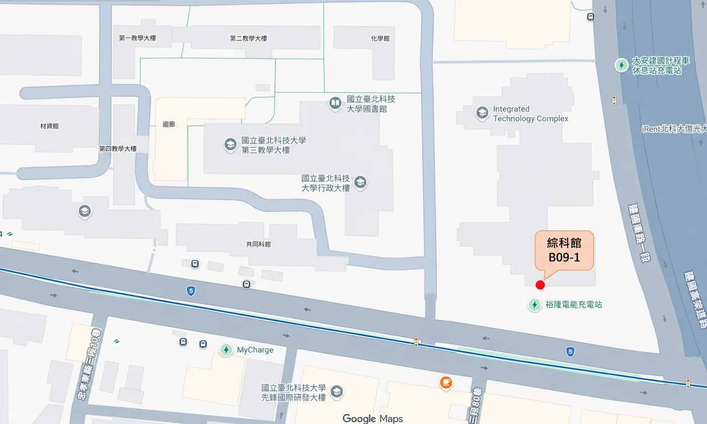
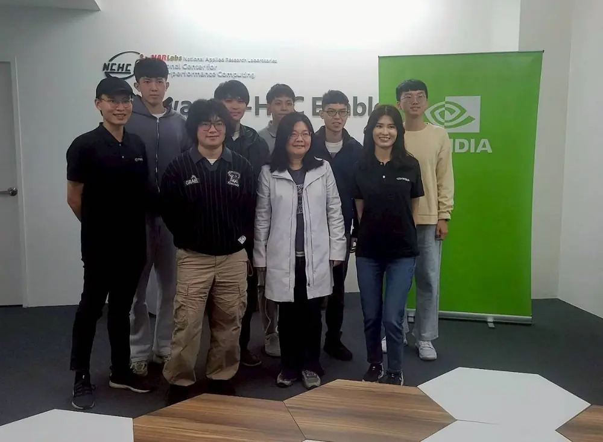
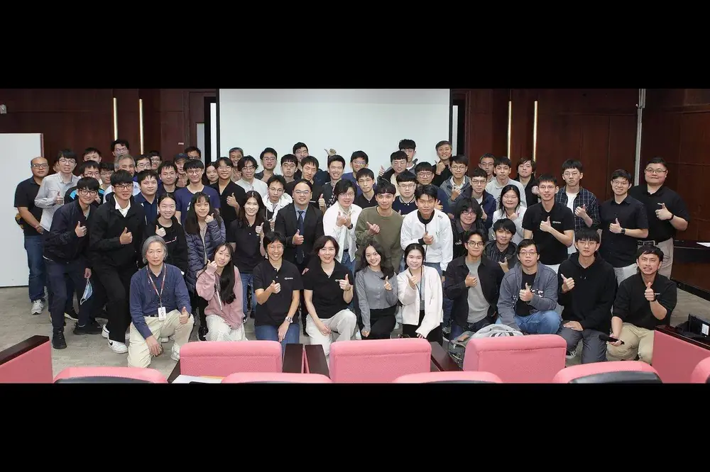
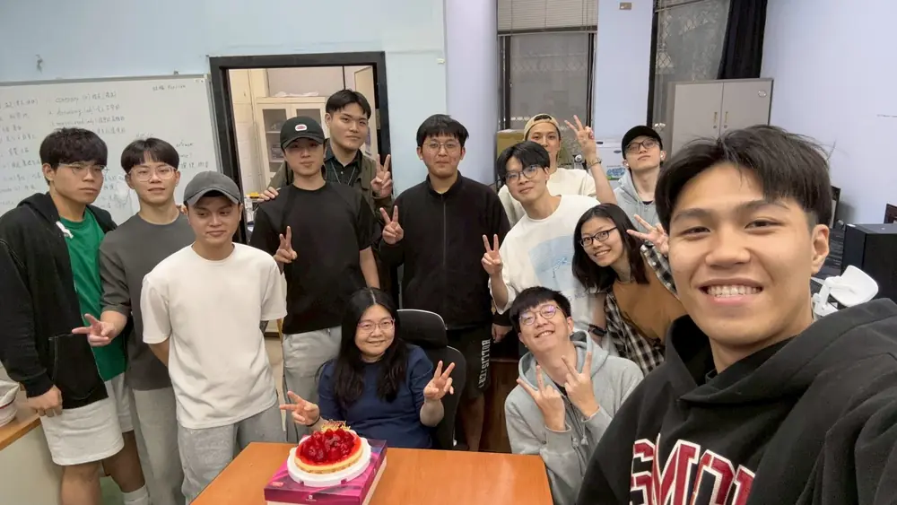
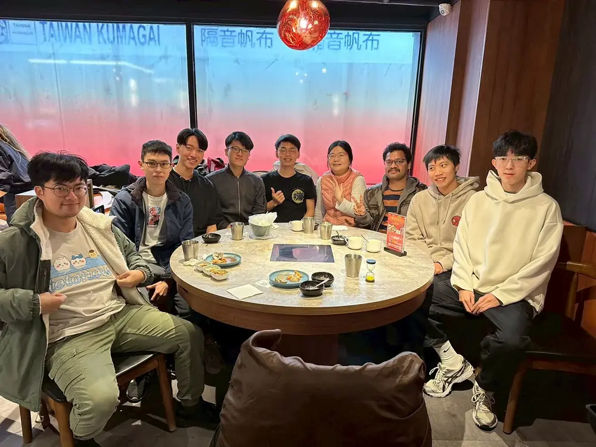
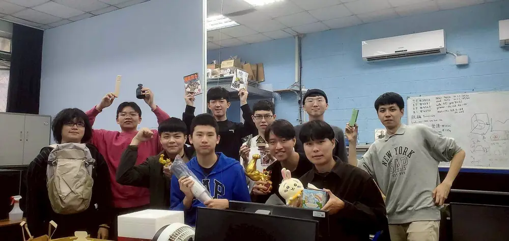
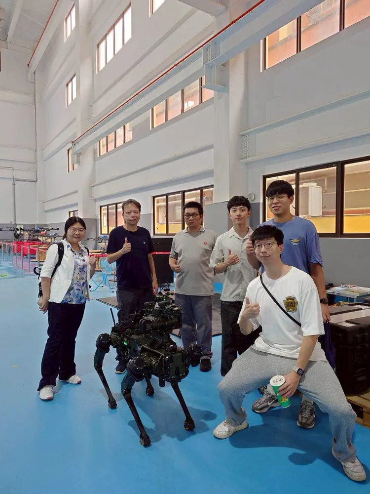
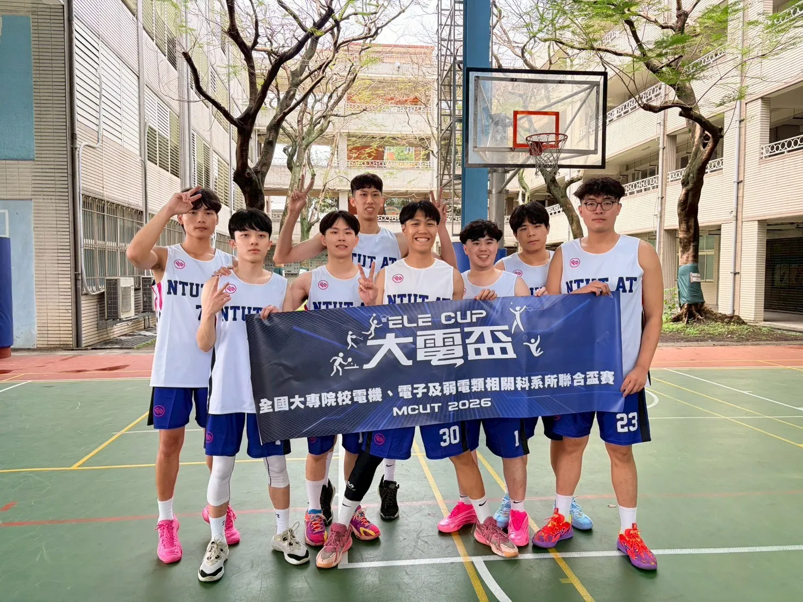

國立臺北科技大學 自動化科技研究所
微奈米光學系統研究室
Nano-photonic and Micro-Optical System Lab.
Research Areas
研究方向包含光學與電磁超穎表面、生態影像與聲景監測、醫學影像與幾何分析、邊緣裝置與智慧控制。
聚焦微奈米光學設計、光機電系統整合與跨領域智慧感測，結合理論模型、系統架設與實驗量測，培養學生從問題定義到工程驗證的完整研究能力。
Research Focus
Optics
微奈米結構、超穎表面、電磁吸收與屏蔽
AI
影像辨識、聲音分類、邊緣運算與自監督模型
Medical
醫學影像、標誌點偵測與可量化輔助分析
About
實驗室簡介
本實驗室重視光學系統、材料結構與智慧分析工具的整合，研究內容涵蓋微奈米光學元件設計、光學與電磁模擬、實驗量測、影像與音訊資料分析，以及可落地的工程應用。
Location
實驗室位置
實驗室位於國立臺北科技大學綜科館 B09-1 室，鄰近忠孝新生站與校園主要教學研究場域。

Lab Life
近期活動
實驗室參訪、競賽與聚會活動，呈現團隊交流與學生生活。






